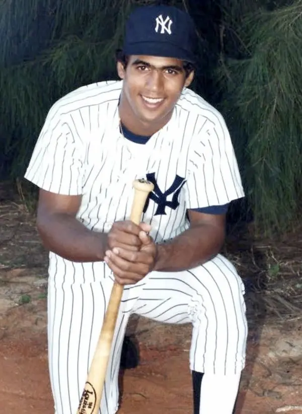

Stan Javier
Career Highlights & Facts
(Facts are AI-generated and may require verification)
- Father, Julián Javier, was a two-time All-Star and two-time World Series champion second baseman.
- Was the first player to play for both the San Francisco Giants and Oakland Athletics in the same season.
- Won the 1989 World Series as a member of the Oakland Athletics.
Career Totals
| WAR | AB | H | HR | BA | R | RBI | SB | OBP | SLG | OPS | OPS+ |
|---|---|---|---|---|---|---|---|---|---|---|---|
| 25.5 | 5047 | 1358 | 57 | .269 | 781 | 503 | 246 | .345 | .363 | .708 | 93 |
Statistics via Baseball-Reference.com
The Original Clue